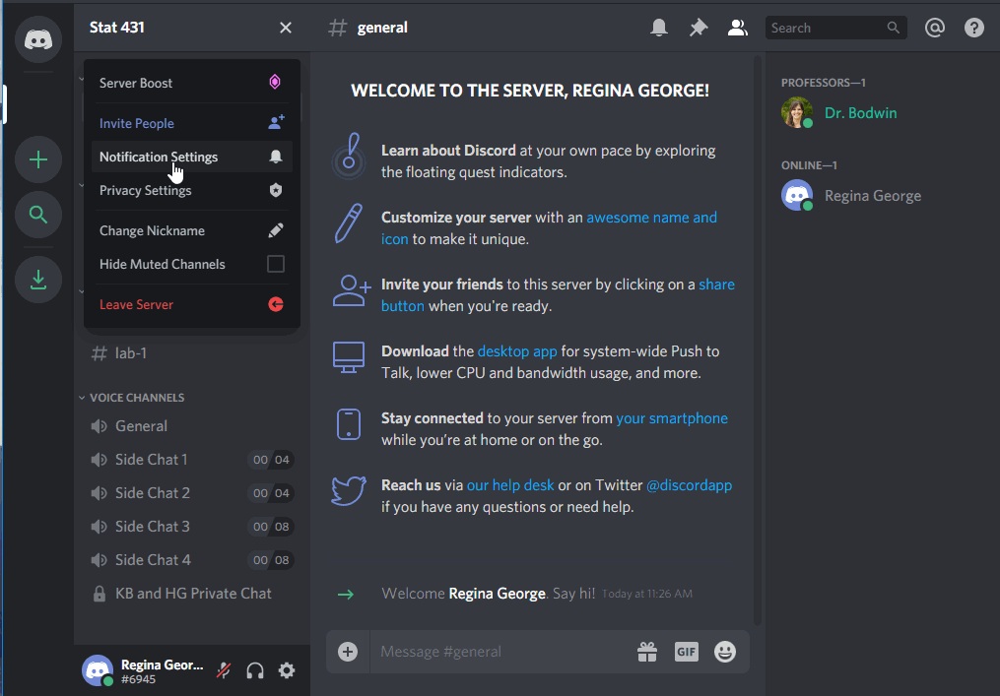
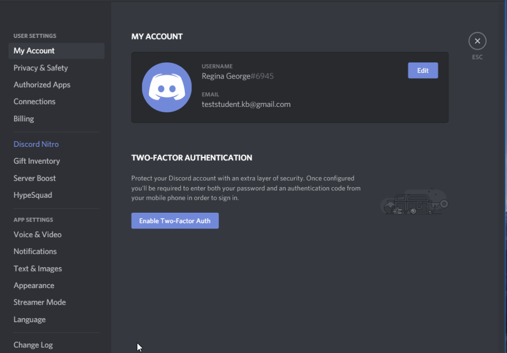
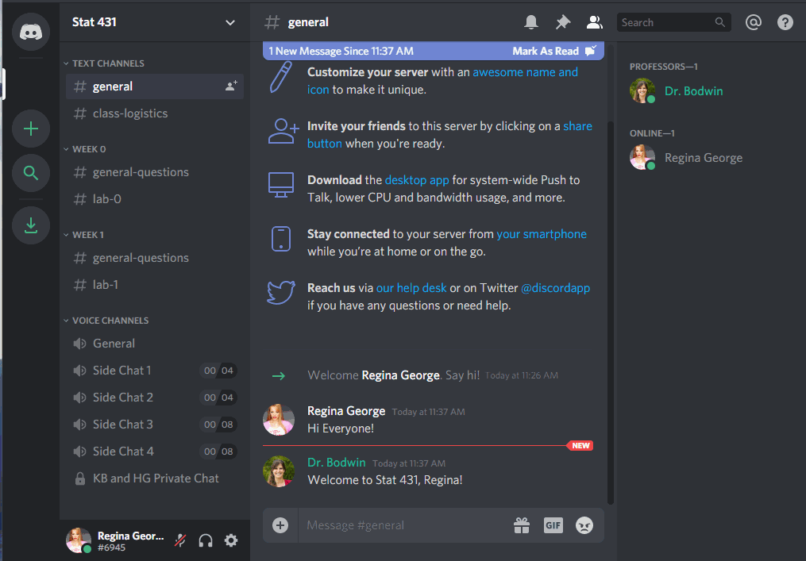
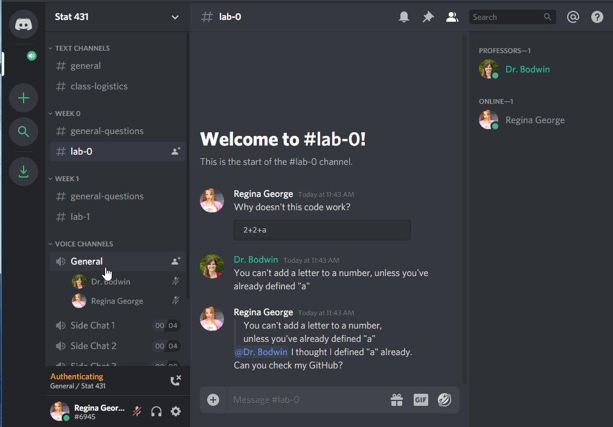
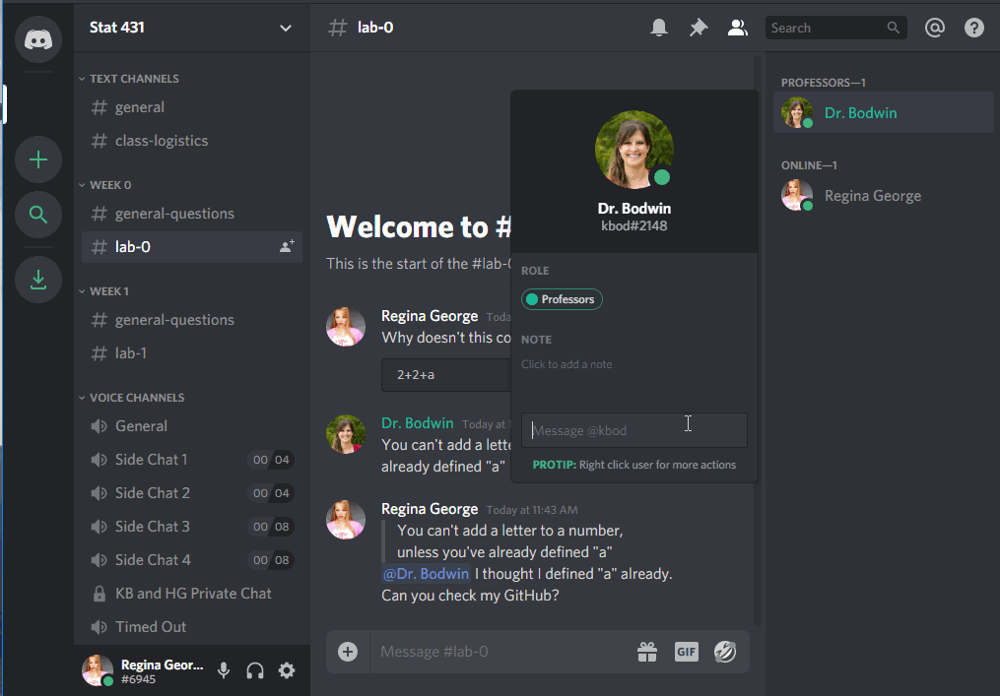

Course Setup and Structure
Welcome!
In this coursework, you’ll get set up with the Class Discord, learn about what is expected of you each week, and hear some tips from me about how to succeed.
1 Using the Class Discord
We’ll be using Discord to interact with our peers and group members.
Discord is a platform for text chatting, voice chatting, and screen sharing.Through Discord, you can ask me public questions, we can meet one-on-one or in small group.
1.1 Join the server
Join the Discord Server through the link on Canvas to start experimenting with the interface.
When you join the server, you will be given some suggestions to get started.

I recommend you click through these - and in particular, it is probably a good idea to download the desktop version of Discord, and perhaps to install it on your phone if you wish.
1.2 Set up your account
Verify your email
To use this Discord server, you must have a verified email.
Nobody (including your professors) will be able to see this email, and it does not have to be your Cal Poly email. This is simply to keep the server from being overrun by temporary accounts.
Create your identity
The first thing you should do is decide what name and picture you would like to use.

I would like to strongly encourage you to use your real name and picture, so that everyone can get to know you. However, if you prefer to remain anonymous, you are free to do so.

(Please do not be like Regina and use the name of another student, however!
This kind of impersonation will result in a permanent ban from the server.)
Decide about privacy and notifications
The default settings on the channel are probably just fine for you.
Feel free to make any changes that work for you, though.
You can change your message notifications:

You can edit your privacy settings, although most things are already private:

Connect other apps
You can connect other apps to Discord, either for productivity or just for fun.

1.3 Using the Channels
The server is made up of many channels. Some are text chatrooms, while some are “Voice Channels” that connect you via audio to everyone else in the channel.
Text Channels
Use the #general channel for anything and everything:

If your question is about course logistics, rather than the material itself, consider using the #class-logistics channel:

You can use the specific weekly channels to ask questions about the material…

… or the specific lab assignment.

Notice that you can use tick marks (```), like in Quarto, to make your code appear in a formatted code box.
Voice Channels
To join a voice channel, simply click it! Make sure you are careful about when you are muted or unmuted.

The extra “Side Chat” channels are limited to 4 or 8 people, if you would like to start an impromptu study conversation without being heard by me and / or the rest of the class. (I’ll only drop in if you invite us!)
Voice channels can also be used for people to “Go Live”, and share their screen with everyone else.

While this will usually be something professors use to demonstrate code, you can go live, too! But you may need to download the desktop version of Discord to do so.
Private messages
It is also easy to send private messages, to your professor or to each other. These private messages can also easily be used to launch a private video chat and / or screen sharing.

1.4 See you at the Party!
2 Course Structure
2.1 How your typical week will look
Readings and videos (every week)
I favor a “flipped classroom,” as it gives you more time to clarify and solidify statistical concepts through hands-on exercises. Each week, you will read the required chapter(s), completing a required reading guide to walk you through the central concepts for each week.
Due Tuesday at noon.
Concept quizzes (every week)
Each week there will be a short (~10 questions) quiz over the reading and videos from the week. These quizzes are intended to ensure that you grasped the key concepts from the week’s readings. The quizzes are not timed, so you can feel free to check your answers with the textbook and / or videos if you so wish. The quizzes are marked on completion as complete or incomplete.
Due Tuesday at noon.
Tutorials (every week)
You can think of the tutorials as an “interactive” textbook, as they interweave statistical ideas alongside examples of how to work with data in R and hands-on exercises writing the R code necessary to complete a given task. Each exercise has hints available if you get stuck!
The tutorials are work at your own pace, so you can complete them all at once or slowly throughout the week. The lab assignments will require for you to put the skills you learned in the tutorials to work, so you are required to complete each week’s tutorial before Thursday’s lab.
The tutorials are marked on completion as complete or incomplete. You will submit a screenshot of the completion page at the end of the tutorial to confirm that you completed the tutorial for the week.
Due Thursday at noon.
Statistical critiques (every 2-weeks)
These assignments are case studies in which you will evaluate a data visualization or statistical analysis, determining how well-performed and presented the analysis was and making recommendations for improving or using the analysis. Critiques are due roughly 1-week after they are assigned and should take 1-2 hours. You will receive feedback and a mark of Success or Growing (elaborated more on later), and you will be able to revise based on that feedback. There will be two total critiques.
Lab Assignments (every week)
Labs will be assigned on Thursday every week, providing the opportunity to explore the course concepts in the context of real data. Lab assignments will require for you to work through the tutorial for the week, thus the tutorials are due before the start of class on Thursday.
You will complete the lab assignments in the same teams you collaborate with in class. You will access the lab assignment through Posit Cloud, which you will be walked through during the first lab. Your group will be expected to submit your completed lab on Canvas. You will need to submit both the HTML and Quarto documents.
Due Sundays at midnight.
Midterm & Final Projects
There will be two projects throughout the quarter, where you will be asked to synthesize the statistical concepts you have learned in a formal statistical report. Your critiques will help guide you toward how you do / don’t want your report to look. Each project will be done independently, and requires you to submit a project proposal and draft report before the final deadline. You are encouraged to use the feedback received on these assignments to improve your final report. The final reports will be graded as Excellent, Satisfactory, Progressing, or No Credit based on a rubric that will be shared with the initial assignment.
2.2 Week 1 Concept Quiz: Course Set-up
Question 1: Where are office hours held?
- In person
- Discord
- Zoom by appointment
- Canvas
Look at the office hours section of the course syllabus!
Question 2: What materials and technology are required for this course? Select all that apply!
- Introduction to Modern Statistics
- RStudio Cloud – the application for working in R
- Canvas
- Discord
Look at the required materials section of the course syllabus!
Question 3: In this course, Reading Guides are due by ____, Concept Quizzes are due by ____, and Tutorials are due by ____.
Question 4: If you have a question about the course content, what is the best first step?
- Post your question on Discord in the appropriate channel
- Send Dr. Theobold an email
- Go to Dr. Theobold’s office hours on Tuesday
- Google it
Look at the Getting Help section of the course syllabus!
Question 6: You have finished the week’s Concept Quiz, and you want to know if you did it right. You ask your friend, and they say, “Oh, I got Luke Skywalker as my answer.” This is a violation of the Academic Honesty policy, true or false?
Question 7: You and a friend have been working on Critique 1 together. You finish up and want to go to bed, but they are still a little confused. You email them your file, and say, “Don’t copy this, just look how I did it so you can figure it out.” Have you violated Academic Honesty policies?
Question 8: You have been working on making a visualization for your Midterm Project for what feels like forever and it seems like you are making little to no progress. You type the prompt into Google and “Wham!” the first result is a Stack Overflow page with a solution. You copy-and-paste the solution from the Stack Overflow page into your Midterm Project and do not reference that you used an outside source. You have violated the Academic Honesty policy, true or false?
Question 9: Introduce yourself in the “Introductions” channel of the STAT 551 Discord Server and upload your favorite (PG-rated) gif.